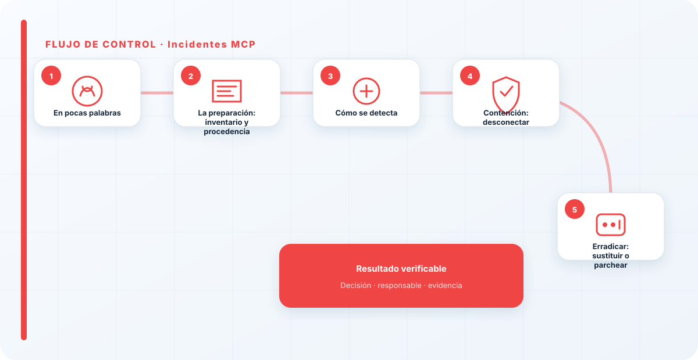
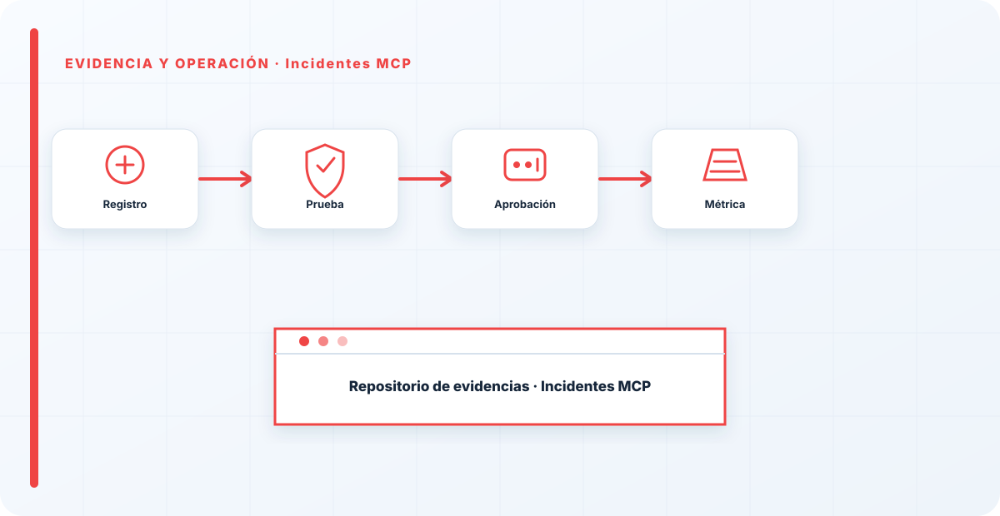

En pocas palabras
Un incidente de MCP es, en el fondo, un incidente de cadena de suministro: el conector que unía tu modelo con tus datos y herramientas se ha comprometido, o resulta que hacía algo que no debía. Como el MCP se sitúa entre el modelo y tu información, un conector malicioso o vulnerable puede filtrar datos o ejecutar acciones desde esa posición privilegiada. Y tiene una particularidad que lo hace incómodo y distinto de otros incidentes: muchas veces el aviso viene de fuera, cuando se publica una vulnerabilidad del componente que tú tenías enchufado sin haber tocado nada.
La preparación: inventario y procedencia
La preparación para un incidente de MCP se llama, sobre todo, inventario. Si no sabes qué conectores tienes enchufados, quién los mantiene y en qué sistemas está cada uno, el día que se publique una vulnerabilidad de un MCP no podrás ni saber si te afecta, ni mucho menos actuar rápido. El inventario de conectores —parte del AI-BOM— es lo que convierte "ha salido una vulnerabilidad de tal MCP" en una consulta de dos minutos en lugar de una investigación angustiosa.
La otra pieza de preparación es haber registrado la procedencia y los permisos de cada conector: de dónde vino, quién responde de él, y a qué tiene acceso. Con eso, cuando algo falla, puedes medir el alcance —qué podía ver y hacer ese conector— de inmediato. Sin ello, cada incidente de MCP empieza por una fase de "y esto qué era y qué tocaba" que retrasa la contención justo cuando la rapidez importa.
Cómo se detecta
Un incidente de MCP se detecta por comportamiento raro del conector —acciones o accesos que no encajan, tráfico inesperado— o, muy habitualmente, por un aviso de seguridad externo sobre el componente. Esta segunda vía es característica de la cadena de suministro: el problema puede existir sin que tú hayas hecho nada, simplemente porque alguien encontró y publicó una vulnerabilidad en un conector que usas.
Cuando detecto el incidente, reviso dos cosas: qué permisos tenía el MCP y a qué llegó a acceder —que es la medida real del alcance—, y, enseguida, la pregunta de cadena de suministro que lo cambia todo: ¿este mismo conector está enchufado en otros sistemas? Porque si lo está, no tengo un incidente, tengo tantos como sitios donde lo instalé, y todos hay que tratarlos.

Contención: desconectar
La contención de un incidente de MCP es directa y suele ser rápida: desconectar el conector. Al ser una integración, cortarla frena el daño de inmediato. Luego, aislar lo que tocó y revocar los accesos que tenía. Esa velocidad de desconexión es una de las ventajas de tratar los conectores como piezas separables y bien inventariadas: si están bien gestionados, quitarlos es cuestión de minutos.
Pero la contención no termina en un solo sistema: si el conector estaba en varios, hay que desconectarlo de todos, y ahí es donde el inventario vuelve a ser decisivo. Desconectarlo de un sitio y dejarlo vivo en otros es dejar el incidente medio contenido, con una puerta todavía abierta. La contención completa de un incidente de MCP tiene tantos frentes como sitios donde ese conector estaba enchufado.
Erradicar: sustituir o parchear
Erradicar la causa significa sustituir el conector comprometido por uno verificado, o aplicar el parche si el mantenedor lo ha publicado. Y hacerlo con más cuidado del que se tuvo la primera vez: verificando la procedencia, revisando qué permisos pide, y dándole el mínimo acceso necesario en lugar de reconectarlo tal cual estaba.
La causa raíz de un incidente de MCP es, casi siempre, la misma que da la guía de seguridad de MCP antes del incidente: se conectó sin revisar. El incidente obliga a hacer por fin lo que debió hacerse al principio —revisar procedencia, permisos y comportamiento—, y a inventariar dónde más está ese componente para no repetir el descuido. Erradicar bien un incidente de MCP suele significar, en la práctica, empezar a tratar los conectores como la cadena de suministro que son.
Recuperación, comunicación y la lección de la cadena
Recuperar es reconectar el conector verificado o parcheado y restaurar los accesos, ahora con la disciplina que faltó. La comunicación, si el conector comprometido llegó a filtrar datos o ejecutar acciones, sigue las mismas reglas que cualquier incidente: honesta, a tiempo, con el impacto real, y coordinada con legal si hubo datos personales de por medio.
La lección es casi siempre la misma, y es la de todo este frente: los incidentes de MCP son la factura de haber conectado deprisa. La respuesta técnica —desconectar, sustituir— es fácil; lo que de verdad evita el siguiente es empezar a tratar los conectores como parte de tu cadena de suministro desde el día uno: inventariados, con procedencia, con permisos mínimos, y revisados al actualizar. Un incidente de MCP bien aprendido termina con una organización que, por fin, sabe qué conectores tiene enchufados y qué hace cada uno con lo que ve.
Comunicación y coordinación
Un incidente de MCP se comunica como cualquier otro, con una particularidad: si el origen fue una vulnerabilidad publicada del componente, conviene comunicar también hacia dentro que el problema no vino de un error propio sino de un tercero —aunque la responsabilidad de haberlo conectado y de responder sí es tuya—. Esa distinción ayuda a que la organización entienda el incidente como lo que es, un riesgo de cadena de suministro, y no como un fallo puntual de alguien.
Si el conector comprometido llegó a filtrar datos o a ejecutar acciones, la comunicación sigue las reglas de siempre: honesta, con el impacto real, coordinada con legal si hubo datos personales. Y hacia los equipos, una instrucción clara y rápida: si este conector está en tu sistema, desconéctalo ya. En un incidente de cadena de suministro, la velocidad con la que la organización entera reacciona depende de que el mensaje llegue claro y a todos los que tienen el componente enchufado.

La higiene que evita el próximo
Todo incidente de MCP termina, si se aprende bien, en una misma dirección: implantar la higiene de cadena de suministro que faltaba. No es nada exótico; es la disciplina que ya aplicas —o deberías— a cualquier dependencia de software, extendida a los conectores de IA. Inventario de qué tienes conectado y dónde. Procedencia registrada de cada componente. Permisos mínimos, no acceso total por defecto. Revisión cuando el conector se actualiza. Y vigilancia de las vulnerabilidades publicadas de lo que usas.
Lo que convierte esa higiene en algo que de verdad se hace, y no en una buena intención, es integrarla en el momento de conectar: que enchufar un MCP nuevo pase por una revisión mínima, igual que meter una librería en producción pasa —o debería pasar— por una. Mientras conectar un MCP siga siendo más fácil y menos vigilado que añadir una dependencia de código, los incidentes de MCP seguirán ocurriendo. El objetivo, después de uno de estos incidentes, es que el siguiente conector no entre sin que alguien lo mire; ese cambio de proceso es la verdadera recuperación.
El AI-BOM, protagonista del incidente
Si un incidente de MCP deja una moraleja por encima de las demás, es el valor del inventario. Toda la respuesta —medir el alcance, saber en cuántos sistemas está el conector, desconectarlo de todos, comprobar si te afecta una vulnerabilidad publicada— depende de tener un AI-BOM al día. Sin él, cada una de esas preguntas se convierte en una investigación manual y lenta, justo cuando el tiempo apremia.
Por eso, aunque el AI-BOM parezca un tema de gobierno aburrido y alejado de la respuesta a incidentes, en un incidente de MCP es el protagonista silencioso: la diferencia entre contenerlo en una hora o pasarte el día averiguando qué tienes conectado. Quien sale de un incidente de MCP y no refuerza su inventario está renunciando a la lección más útil que ese susto le podía dejar.
Los incidentes de MCP son la factura de haber conectado deprisa. Casi siempre, cuando investigo uno, el conector entró en producción sin que nadie revisara quién lo mantenía ni qué hacía, y a menudo estaba enchufado en más sitios de los que nadie recordaba. Desconectar es fácil; lo difícil, y lo que evita el siguiente, es tratar los conectores como cadena de suministro desde el principio. La comodidad de hoy es el incidente de mañana.
Los errores que veo una y otra vez
- Conectar el MCP sin revisión previa, la causa raíz habitual.
- No saber qué permisos y accesos tenía el conector.
- No comprobar si el mismo MCP está en otros sistemas y dejarlo vivo en alguno.
- Reconectar sin verificar procedencia ni parche.
- No inventariar los conectores como cadena de suministro.
- Tratar el incidente como un problema técnico aislado y no de cadena de suministro.
Referencias y marcos relacionados
Contenido educativo y técnico. No sustituye asesoramiento jurídico ni una auditoría formal.